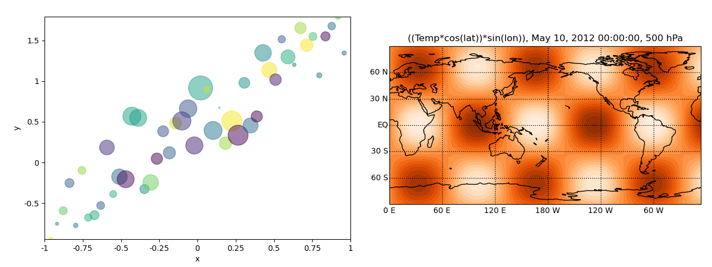

Note
Click here to download the full example code
Stitch plots together into a grid¶
import pylab as pyl
pyl.ioff()
import pygeode as pyg
import numpy as np
from pygeode.tutorial import t2
# Generate some data for a scatter plot
N = 50
x_values = np.linspace(-1,1,N)
colors = np.random.rand(N)
area = 1000 * np.random.rand(N) * (1 - abs(x_values))
x = pyg.NamedAxis(values=x_values, name='x')
y = pyg.NamedAxis(values=x_values + np.random.rand(N), name='y')
ax_scatter = pyg.vscatter(x,y, c=colors, s=area, alpha=0.5)
# Make a vcontour
ax_vcontour = pyg.vcontour(t2.Temp(pres=500, time='10 May 2012')*(pyg.cos(t2.lat))*pyg.sin(t2.lon), cmap='Oranges')
# Stitch the axes together side by side into a grid
ax_both = pyg.plot.grid([[ax_scatter, ax_vcontour]])
pyl.ion()
ax_both.render()